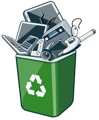

What is E-Waste?
Electronic waste, commonly referred to as e-waste, consists of discarded electrical or electronic devices. These can include items such as computers, mobile phones, televisions, printers, and other gadgets that have reached the end of their useful life.
E-waste poses significant environmental and health challenges. Many of these products contain toxic materials like lead, mercury, and cadmium, which can leach into the soil and water, causing pollution. On the other hand, e-waste also contains valuable materials, including gold, silver, and copper, that can be recycled and reused.
Managing e-waste involves proper disposal methods, such as recycling and reusing parts where possible. It also requires raising awareness about reducing consumption, designing more sustainable products, and promoting the repair of electronics rather than replacing them.
